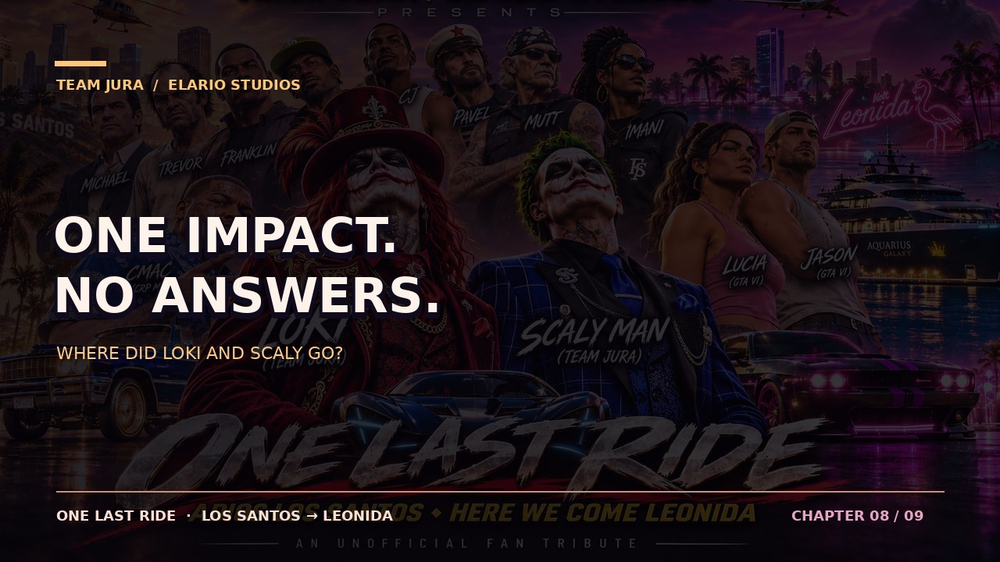
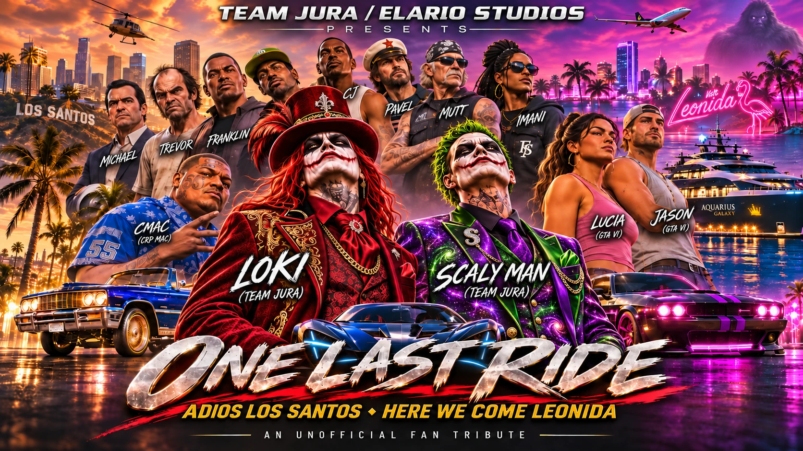

THE AQUARIUS · NIGHTThe last transmission
The film opens at the moment the yacht is struck.
LOKI: “SCALY! WHERE ARE YOU?!”
1 / 9

From Paleto Bay to the Pacific. One impossible battle, one legendary crew, and a mystery that reaches the shores of Leonida.
An original 36-second motion-poster preview with music and title cards. The full animated film, recorded character voices and battle footage have not yet been produced.
Select any chapter to explore its scene description, dialogue and cinematic frame.

THE AQUARIUS · NIGHTThe film opens at the moment the yacht is struck.
LOKI: “SCALY! WHERE ARE YOU?!”
Every character gets their own moment. No duplicate Trevor, no interchangeable crew faces.
Long red hair, red top hat and ornate red suit. Fast, theatrical, tough and fiercely loyal. His voice direction is an original rough-edged boxer-style accent.
Purple-green galaxy suit. Relaxed, distinctly Midwestern voice; controlled intensity. He's the calm voice who always turns back for Loki.
Cmac steps off the bus and Lupe hugs him—her only scene. Later he gives the Yeti an unlikely pep talk and disappears into the woods.
Franklin, Lamar, CJ, Michael, Trevor in his Bodhi, Imani, Mutt, Pavel and supporting business crews. Jason and Lucia carry the mystery into Leonida.
These cues guide the future full film; the preview presently uses an original synthesized instrumental.
Warm strings, city ambience and nostalgic bass.
Rising heroic theme, engines and rotor wash.
Comedic silence before an absurd eruption.
The full heroic refrain, then an emotional sunset.
One metallic crash. Water. Silence. Mystery.
Your gameplay memories stay on your device unless you choose to export them. Upload a screenshot or add a YouTube link; these aren't automatically published for other visitors. Back them up before switching devices.
Loki and Scaly's fate isn't revealed here. Follow the mystery from the wreckage to Jason and Lucia's world.
Our source promise: Official GTA news is credited to Rockstar Games / Take-Two; licensed or link-only fan map work is attributed to its original community researchers; imagined scenes and speculative GTA VI placements are fan fiction / unverified. Research credits ↗ · Official GTA VI site ↗
Production note: The MP4 above is a motion-poster proof of concept, not a completed animated feature. Community screenshots and real-life appearances require rights/consent checks before public film distribution. Rockstar trailer footage, official audio tracks or actor voice samples are not bundled here. If an official opening is later embedded, use the original authorized source/link rather than republishing the trailer.